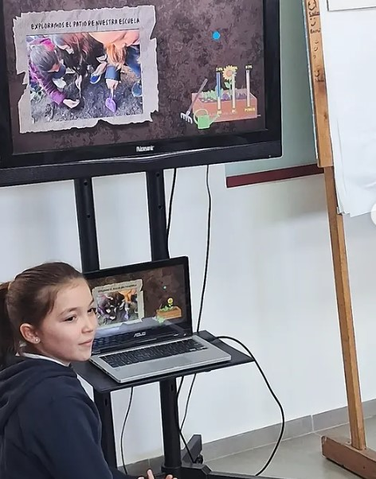

Science
Explorar el mundo natural mediante la observación, la investigación, la formulación de preguntas y la experimentación.

Una propuesta bilingüe que acompaña a nuestros alumnos desde Form 1 hasta Form 6, integrando una sólida formación académica en español con experiencias significativas de aprendizaje en inglés.
En Uruguayan American School de Mercedes, Primary es una etapa de consolidación de aprendizajes y desarrollo progresivo de herramientas académicas, lingüísticas, sociales y personales.
Nuestra propuesta integra dos experiencias educativas complementarias: durante la mañana, los alumnos trabajan las áreas curriculares de Educación Primaria en español; por la tarde, continúan su formación en inglés.
Curiosidad · Autonomía · Pensamiento crítico · ComunicaciónCada nivel acompaña nuevos desafíos y fortalece progresivamente los conocimientos, la autonomía, los hábitos de trabajo y la confianza.

Durante el horario de la mañana, nuestros alumnos desarrollan las áreas curriculares correspondientes a Educación Primaria.
La propuesta promueve la comprensión, la expresión oral y escrita, el razonamiento lógico, la resolución de problemas, la investigación y el pensamiento crítico.
Los estudiantes observan, preguntan, investigan, producen, argumentan y construyen conocimientos, desarrollando una autonomía cada vez mayor.

Buscamos que los conocimientos puedan relacionarse entre sí y adquirir sentido a través de experiencias reales y significativas.
Los proyectos, investigaciones, producciones, presentaciones y actividades colaborativas permiten integrar diferentes áreas y utilizar tanto el español como el inglés como herramientas para aprender.
Esta forma de trabajo favorece la autonomía, la creatividad, la comunicación, la organización y el pensamiento crítico.
El inglés ocupa un lugar central en nuestra propuesta educativa.
Durante la tarde, nuestros alumnos participan de una experiencia de aprendizaje en inglés que va mucho más allá del estudio tradicional del idioma.
Buscamos desarrollar un inglés global, que les permita comprender, expresarse, comunicarse y desenvolverse con confianza en diferentes contextos.
El idioma se convierte también en una herramienta para aprender contenidos, investigar, intercambiar ideas y comprender distintas realidades.
Además del trabajo específico de English, nuestros alumnos desarrollan tres áreas académicas en inglés: Science, Humanities y Global Perspectives.

Uruguayan American School de Mercedes forma parte de Cambridge International Education y se encuentra registrada como Cambridge Primary School y Cambridge International School.


El inglés se transforma en una herramienta para investigar, comprender, comunicar y desarrollar nuevas formas de pensamiento.
Explorar el mundo natural mediante la observación, la investigación, la formulación de preguntas y la experimentación.
Comprender sociedades, territorios, culturas e historia a través de proyectos, lecturas e investigaciones.
Analizar diferentes puntos de vista y desarrollar pensamiento crítico, investigación, comunicación, reflexión y trabajo colaborativo.
Primary es una etapa para consolidar conocimientos, construir hábitos de trabajo y desarrollar una mirada cada vez más autónoma sobre el aprendizaje.
Buscamos que cada estudiante avance con herramientas académicas sólidas, confianza para enfrentar nuevos desafíos y capacidad para pensar, preguntar, crear y aprender junto a otros.
Educar en dos idiomas es ampliar las formas de comprender el mundo y las posibilidades de participar en él.